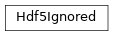

Hdf5Ignored¶
full name: tenpy.tools.hdf5_io.Hdf5Ignored
parent module:
tenpy.tools.hdf5_iotype: class
Inheritance Diagram

Methods
|
Initialize self. |
-
class
tenpy.tools.hdf5_io.Hdf5Ignored(name='unknown')[source]¶ Bases:
objectPlaceholder for a dataset/group to be ignored during both loading and saving.
Objects of this type are not saved. Moreover, if a saved dataset/group has the type attribute matching REPR_IGNORED, instance of this class are returned instead of loading the data.
- Parameters
name (str) – The name of the dataset during loading; just for reference.